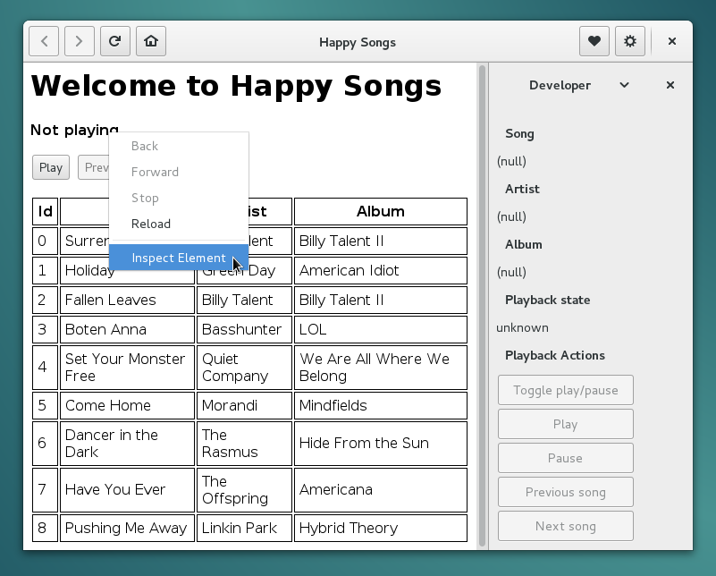

This tutorial briefly describes creation of a new web app script for Nuvola Apps Runtime from scratch. The goal is to write an integration script for fake Happy Songs service shipped with Nuvola SDK and to prepare you to create your own service integration. I'm looking forward to a code review ;-)
Install Nuvola App Developer Kit (ADK). This is a flatpak runtime that contains Nuvola Apps Runtime, SDK and dependencies.
Create a project directory ~/projects/nuvola-apps (or any other name, but don't forget to
adjust paths in this tutorial).
mkdir -p ~/projects/nuvola-appsCreate a new project with "nuvola://home.html" as a home URL.
$ cd ~/projects/nuvola-apps
$ nuvolasdk new-project --name "Happy Songs" --url "nuvola://home.html"
...
Finished!
./nuvola-app-happy-songs
total 52
drwxr-sr-x 1 fenryxo fenryxo 244 Dec 4 18:39 .
drwxr-xr-x 1 fenryxo fenryxo 44 Dec 4 18:39 ..
-rw-r--r-- 1 fenryxo fenryxo 103 Dec 4 18:39 CHANGELOG.md
-rwxr-xr-x 1 fenryxo fenryxo 65 Dec 4 18:39 configure
-rw-r--r-- 1 fenryxo fenryxo 3649 Dec 4 18:39 CONTRIBUTING.md
drwxr-sr-x 1 fenryxo fenryxo 144 Dec 4 18:39 .git
-rw-r--r-- 1 fenryxo fenryxo 91 Dec 4 18:39 .gitignore
-rw-r--r-- 1 fenryxo fenryxo 2701 Dec 4 18:39 integrate.js
-rw-r--r-- 1 fenryxo fenryxo 1246 Dec 3 18:57 LICENSE-BSD.txt
-rw-r--r-- 1 fenryxo fenryxo 18424 Dec 3 18:57 LICENSE-CC-BY.txt
-rw-r--r-- 1 fenryxo fenryxo 541 Dec 4 18:39 metadata.in.json
-rw-r--r-- 1 fenryxo fenryxo 1079 Dec 4 18:39 README.md
drwxr-sr-x 1 fenryxo fenryxo 60 Dec 3 18:57 srcCopy a dumb example of a streaming website.
cd ~/projects/nuvola-apps/nuvola-app-happy-songs
cp "$(nuvolasdk data-dir)/examples/home.html" .If you are not familiar with the Git version control system, check Git tutorial or Pro Git Book.
Metadata file contains basic information about your service integrations. It uses
JSON format and it's called metadata.in.json.
Let's look at the example:
{
"id": "happy_songs",
"name": "Happy Songs",
"maintainer_name": "Jiří Janoušek",
"maintainer_link": "https://github.com/fenryxo",
"version_major": 1,
"version_minor": 0,
"api_major": 4,
"api_minor": 6,
"categories": "AudioVideo;Audio;",
"requirements": "Chromium[65] Codec[MP3] Feature[MSE]",
"home_url": "nuvola://home.html",
"license": "2-Clause BSD, CC-BY-3.0",
"build": {
"icons": [
"src/icon.svg SCALABLE 64 128 256",
"src/icon-xs.svg 16 22 24",
"src/icon-sm.svg 32 48"
]
}This file contains several mandatory fields:
idIdentifier of the service. It can contain only letters a-z, digits 0-9 and underscore _ to
separate words, e.g. google_play_music for Google Play Music, 8tracks for 8tracks.com.
nameName of the service (for humans), e.g. "Google Play Music".
version_majorMajor version of the integration, must be an integer > 0. You should use
1 for an initial version. This number is increased, when a major change occurs.
version_minorA minor version of service integration, an integer >= 0. This field should be increased only when a new release is made. Never increase version number in regular commits nor pull requests, but only in release commits with a commit message "Release X.Y".
maintainer_nameA name of the maintainer of the service integration.
maintainer_linkA link to a page with contact to maintainer (including http:// or https://) or an email
address prefixed by mailto:.
api_major and api_minorA required version of Nuvola Runtime API. You should use API >= 4.6. You should update API version only if your script doesn't work with older API. For example, if Nuvola Runtime adds a new feature into API 4.X that is so essential for your script that it cannot function properly without it, you will increase API requirement to 4.X. However, all Nuvola versions with API less then 4.x won't be able to load your script any more.
categoriesApplication categories suitable
for the web app. It is used to place a desktop launcher to proper category in applications menu.
Media player services should be in "AudioVideo;Audio;".
home_urlHome page of your service. The dump example of a streaming website contains file home.html, which
has a special address nuvola://home.html. You will use a real homepage later in your own
service integration (e.g. https://play.google.com/music/ for Google Play Music).
This field is not required if you use custom function to handle home page request. See Web apps with a variable home page URL.
licenseList of licenses that apply to your script, e.g. "2-Clause BSD, CC-BY-3.0".
requirementsIf your streaming service requires Flash plugin or HTML5 Audio support for playback (very likely), you need to add respective web app requirement flags for Nuvola 4.x+.
buildInstructions for the build system of Nuvola SDK. It contains a list of icons and their sizes to generate and
an optional list of extra_data containing filenames to include during installation.
This file can include also optional fields:
window_width, window_heightSuggested window width or height in pixels.
allow_insecure_content (since Nuvola 3.1)Whether the page served over the secure HTTPS protocol depends on insecure content served over the HTTP protocol.
As a rule of thumb, set allow_insecure_content to true if you see console warnings similar to that of Pocket Casts:
Runner: **CONSOLE WARN [blocked]** The page at https://play.pocketcasts.com/web **was not allowed** to display
insecure content from http://media.scpr.org/. The default value is false.
user_agent (since Nuvola 4.4)Extra rules for metadata.in.json
If you want to have your integration script maintained and distributed as a part of the Nuvola Apps project, you have to follow rules in Service Integrations Guidelines.
The integration script is the fundamental part of the service integration. It's written in
JavaScript and called integrate.js. This script is called once at start-up of the web app to
perform initialization of the main process and again
in the web page rendering process every-time a web page is loaded in the web view. Let's look at the
next sample integration script that doesn't actually do much, but will be used as a base for further
modifications.
/*
* Copyright 2017 Your name <your e-mail>
*
* Redistribution and use in source and binary forms, with or without
* modification, are permitted provided that the following conditions are met:
*
* 1. Redistributions of source code must retain the above copyright notice, this
* list of conditions and the following disclaimer.
* 2. Redistributions in binary form must reproduce the above copyright notice,
* this list of conditions and the following disclaimer in the documentation
* and/or other materials provided with the distribution.
*
* THIS SOFTWARE IS PROVIDED BY THE COPYRIGHT HOLDERS AND CONTRIBUTORS "AS IS" AND
* ANY EXPRESS OR IMPLIED WARRANTIES, INCLUDING, BUT NOT LIMITED TO, THE IMPLIED
* WARRANTIES OF MERCHANTABILITY AND FITNESS FOR A PARTICULAR PURPOSE ARE
* DISCLAIMED. IN NO EVENT SHALL THE COPYRIGHT OWNER OR CONTRIBUTORS BE LIABLE FOR
* ANY DIRECT, INDIRECT, INCIDENTAL, SPECIAL, EXEMPLARY, OR CONSEQUENTIAL DAMAGES
* (INCLUDING, BUT NOT LIMITED TO, PROCUREMENT OF SUBSTITUTE GOODS OR SERVICES;
* LOSS OF USE, DATA, OR PROFITS; OR BUSINESS INTERRUPTION) HOWEVER CAUSED AND
* ON ANY THEORY OF LIABILITY, WHETHER IN CONTRACT, STRICT LIABILITY, OR TORT
* (INCLUDING NEGLIGENCE OR OTHERWISE) ARISING IN ANY WAY OUT OF THE USE OF THIS
* SOFTWARE, EVEN IF ADVISED OF THE POSSIBILITY OF SUCH DAMAGE.
*/
'use strict'
(function (Nuvola) {
// Create media player component
var player = Nuvola.$object(Nuvola.MediaPlayer)
// Handy aliases
var PlaybackState = Nuvola.PlaybackState
var PlayerAction = Nuvola.PlayerAction
// Create new WebApp prototype
var WebApp = Nuvola.$WebApp()
// Initialization routines
WebApp._onInitWebWorker = function (emitter) {
Nuvola.WebApp._onInitWebWorker.call(this, emitter)
var state = document.readyState
if (state === 'interactive' || state === 'complete') {
this._onPageReady()
} else {
document.addEventListener('DOMContentLoaded', this._onPageReady.bind(this))
}
}
// Page is ready for magic
WebApp._onPageReady = function () {
// Connect handler for signal ActionActivated
Nuvola.actions.connect('ActionActivated', this)
// Start update routine
this.update()
}
// Extract data from the web page
WebApp.update = function () {
var track = {
title: null,
artist: null,
album: null,
artLocation: null,
rating: null
}
player.setTrack(track)
player.setPlaybackState(PlaybackState.UNKNOWN)
// Schedule the next update
setTimeout(this.update.bind(this), 500)
}
// Handler of playback actions
WebApp._onActionActivated = function (emitter, name, param) {
}
WebApp.start();
})(this) // function (Nuvola)Copyright and license information. While you can choose any license for your work, it's recommended to use the license of Nuvola Apps Runtime as shown in the example.
Use strict JavaScript mode in your scripts.
Use self-executing anonymous function to create closure with Nuvola object.
(Integration script are executed with Nuvola object bound to this).
Create MediaPlayer component that adds playback actions and is later used to provide playback details.
Create new WebApp prototype object derived from the Nuvola.WebApp prototype that contains handy default handlers for initialization routines and signals from Nuvola core. You can override them if your web app requires more magic ;-)
Handler for Nuvola.Core::InitWebWorker signal signal that
emitted in clear JavaScript environment with a brand new global window object. You should
not touch it, only perform necessary initialization (usually not needed) and set your listener
for either document's DOMContentLoaded event (preferred) or window's load event.
When document object model of a web page is ready, we register a signal handler for playback actions and call update() method.
The update() method periodically extracts playback state and track details.
Actions handler is used to respond to player actions.
Convenience method to create and register new instance of your web app integration.
Nuvola Apps Runtime uses two processes for each service (web app):
App Runner process that manages user interface, desktop integration components and
a life-cycle of the WebKitGtk WebView. On start-up, Nuvola Runtime executes once the integration
script in the App Runner process to perform initialization of the web app. Note that the script
is executed in a bare JavaScript environment, which means there are no window, document
or other common object provided by a web browser engine. Therefore, make sure you don't use any of these
objects in your top-level code.
In the previous example, there is not any handler for the Nuvola.Core::InitAppRunner signal. It usually is used only for extra features such as Web apps with a variable home page URL, Initialization and Preferences Forms or Custom Actions.
Web Worker process is created by WebKitGtk WebView and it's the place where the web interface of a web app lives, i.e. where the website is loaded. Nuvola Runtime executes the integration script in the Web Worker process everytime a web page is loaded in it to integrate the web page. The script is executed in a complete WebKit JavaScript environment with all bells and whistles.
First of all, make sure you have installed all dependencies.
Then run nuvolasdk check-project to check there are no common errors.
$ nuvolasdk check-project
Checking the project...
No errors have been found.Finally, execute following commands:
./configure to generate Makefile and metadata.json from metadata.in.jsonmake all to build the projectAfter the project have been built, you can run your script with Nuvola Runtime from terminal with following command.
$ nuvolaruntime -DFirst of all, show developer's sidebar (Gear menu → Show sidebar → select "Developer" in the right sidebar), then enable Web Inspector (click Open Dev Tools button for Chromium-based backend or right-click the web page anywhere and select "Inspect element" for WebKitGTK backend).

A particular web app may require certain technologies to function properly. At present, Nuvola enables both Flash plugin and GStreamer HTML5 Audio by default. However, this will change for Nuvola 4.x in the future and you should not count on it.
Web app requirements in Nuvola Apps Runtime 4.x are specified as the requirements property
in metadata.in.json. It can contain a space separated list of following requirements:
Codec[MP3]: The web app can play audio with HTML5 audio technology and requires a MP3 codec.Feature[Flash]: The web app requires Adobe Flash plugin. Use only if your app cannot use
HTML5 Audio.WebKitGTK[X.Y.Z]: The web app requires WebKitGTK >= X.Y.Z.Chromium[X]: The web app requires Chromium Embedded Framework from Chromium release X.Feature[MSE]: The web app requires Media Source extension for HTML5 Audio playback.Codec[H264]: The web app requires h264 codec for HTML5 Audio playback.If you integrate a media player, start with Chromium[65] Codec[MP3] Feature[MSE]. If it complains about Flash plugin,
use Chromium[65] Codec[MP3] Feature[MSE] Feature[Flash].
It can sometimes happen that a web page provides a different code depending on which web browser is used.
Nuvola uses the user agent of WebKitGTK web rendering engine by default. However, if the web app you are
writing script for doesn't work with it, you can disguise Nuvola as a different browser (this is known as
user agent quirks) by setting the user_agent attribute in metadata.in.json. There are several predefined
values (in order of preference):
WEBKITGTK or WEBKITGTK nn: The default user agent of WebKitGTK library. If no version number nn is provided,
the latest known version is used.SAFARI or SAFARI nn: The user agent of the Safari web browser, which also uses WebKit engine.
If no version number nn is provided, the latest known version is used.CHROME or CHROME nn: The user agent of the Google Chrome web browser, which uses the Blink engine
originally based on WebKit. If no version number nn is provided, the latest known version is used.FIREFOX or FIREFOX nn: The user agent of the Firefox web browser, which uses the Gecko engine
originally based on WebKit. If no version number nn is provided, the latest known version is used.Alternatively, you can provide a complete user agent string, e.g. Mozilla/5.0 (Windows NT 10.0; Win64; x64)
AppleWebKit/537.36 (KHTML, like Gecko) Chrome/42.0.2311.135 Safari/537.36 Edge/12.246 for Microsoft Edge
web browser.
You might want to print some debugging messages to console during development. There are two types of them in Nuvola Apps Runtime:
-D or --debug flag.The are two ways how to print debugging messages:
You might be wondering why the Window object isn't always available as the global JavaScript
object. That's because Nuvola Runtime executes a lot of JavaScript code in a pure JavaScript
environment outside the web view. However, the Core::InitWebWorker signal
and your WebApp._onInitWebWorker and WebApp._onActionActivated signal handlers are
invoked in the web view with the global window object, so feel free to use console.log().
After everything has been set up and the web page works correctly, we finally proceed to the main task: web app integration. That means you script is supposed to extract data from a web page and pass them to Nuvola Apps Runtime by calling NuvolaKit JavaScript API. There are two ways to extract data from a web page:
The first way is more general and will be described here. The folowing methods are useful:
id attributename attributeclass attributea, div, etc.)Historically, Nuvola Apps Runtime (previously known as Nuvola Player) has a great support for media players and offers a high level API for Media Player Integration.
Other web apps can use NuvolaKit JavaScript API directly as there is no high level API for other kinds of web apps yet.
If you would like to have your service integration maintained as a part of Nuvola Apps project and distributed in Nuvola Player repository, follow these steps:
integrate.js contain proper copyright information
"Copyright 2017 Your name <your e-mail>".integrate.js and
LICENSE files.Push content of your local repository to the remote repository.
git remote add origin git@github.com:fenryxo/nuvola-app-test.git
git push -u origin masterCreate new issue in your repository titled "Push to Nuvola Apps project"
Supposing you have followed this tutorial, you have enough knowledge to create your own service integration. You are encouraged to take a look at articles in advanced section to spice up your work: